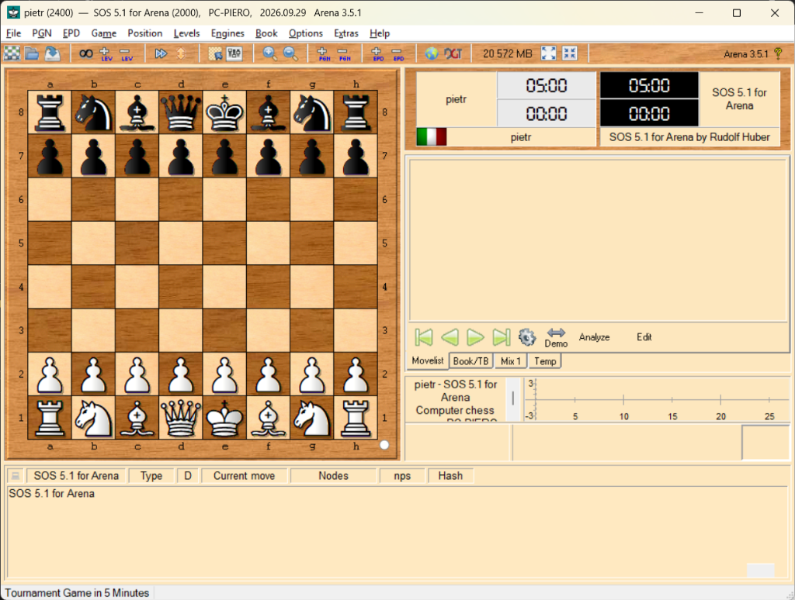
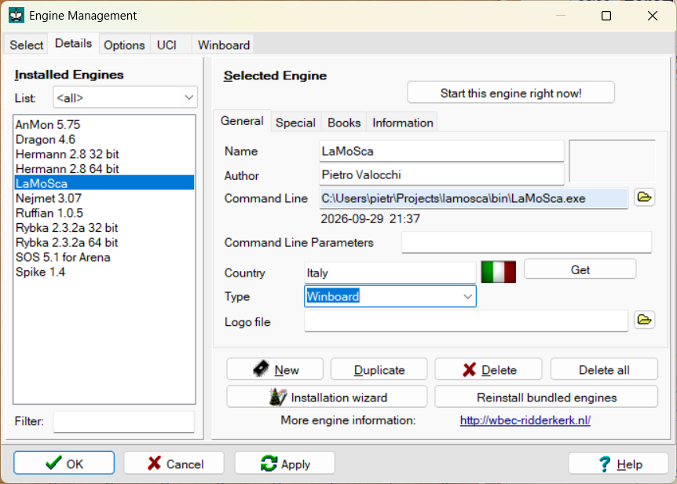

|
LaMoScaAmbiente di Sviluppo Moderno e Interfaccia Grafica |
Il Rilancio del Progetto (2026+)A distanza di oltre vent'anni dalla prima versione didattica (2001-2002), il progetto LaMoSca viene ripreso e traghettato nell'ecosistema moderno del chess programming.
Repository Ufficiale su GitHub:
Tutto il codice sorgente, la documentazione e gli script sono disponibili pubblicamente all'indirizzo: https://github.com/pieva/lamosca 1. Compilazione Locale a 64-bitI sorgenti C originali (versione 0.10) sono stati resi conformi agli standard a 64-bit ed è stato predisposto uno script automatico di build per l'ambiente Microsoft Visual C++ (MSVC). Per compilare il motore direttamente dal codice sorgente, è sufficiente lanciare dal prompt dei comandi o da PowerShell:
build.bat
Lo script rileva automaticamente l'installazione di Visual Studio (es. Visual Studio Community) tramite
bin\LaMoSca.exe (Eseguibile nativo x64, ~45 KB)
2. Interfacciare LaMoSca con una GUI Grafica: Arena ChessPoiché la versione 0.10 implementa il protocollo di comunicazione standard WinBoard / XBoard, è possibile vederlo giocare immediatamente su una scacchiera grafica professionale utilizzando Arena Chess GUI. Passo 1: Download di Arena Chess
Sul sito ufficiale playwitharena.de è possibile
scaricare la versione portatile (senza installazione) Arena 3.5.1 ZIP (17 MB).
È sufficiente estrarre l'archivio compresso in una cartella a piacere ed avviare Passo 2: Avvio della GUI di ArenaAll'avvio, Arena si presenta con la scacchiera centrale e i pannelli di analisi e orologio:
 Passo 3: Installazione del Motore LaMoScaPer aggiungere LaMoSca alla lista dei motori di Arena:
 Ora LaMoSca è registrato e pronto per disputare partite contro di voi o contro altri motori direttamente su Arena! 3. Prossimi Passi della RoadmapCon l'ambiente di compilazione moderno a 64-bit configurato e la verifica del protocollo WinBoard su Arena, lo sviluppo proseguirà con i seguenti traguardi:
|
ContattiPer suggerimenti, discussioni tecniche o per seguire l'evoluzione del progetto, visitate il repository GitHub oppure scrivete all'autore tramite e-mail. Buon divertimento con LaMoSca! |
 |
| Indietro | Indice |